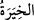
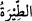
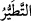
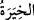
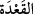
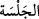
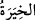
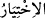
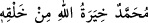

icrâ ettiği şeylerdeki güzel ihtiyarı ile kullar arasındaki cârî olan ahkâma bakınca, onlar
katında rızâ ve sükûnetten daha faziletli bir şey olmaz.”
Hâfız der ki:
Kısmet dâiresi içinde biz teslim noktasıyız
Sen ne düşünürsen lütuftur, neyi emredersen hükümdür
“(seçim)” kelimesi, “ (seçme)” mânâsına gelir. Tıpkı “ kelimesinin “(uğursuzluk)” mânâsına gelişine benzer. Müfredât’ta der ki: “ seçilmesi istenen ve
ihtiyar olunan şeyin hâlidir. “ ve “ kelimelerinin oturanın oturuş hâlini ve
durumunu ifâde etmesi gibi.
el-Vasît’te der ki: “; “dan masdar yerinde kullanılan bir isimdir ve
“seçilen şey” mânâsına da gelir. Denilmiştir ki: “ “Muhammed,
mahlûkâtı arasında Allah’ın seçtiği kimsedir.”
“Allah” zatıyla, “onların ortak koştuklarından,” birinin kendisiyle münakaşa
etmesinden, onun seçiminin başkasının seçimiyle çatışmasından “münezzehtir ve”
müşriklerin ortak koştuğu şeylerden “şânı yücedir.”
et-Te’vîlâtü’n-Necmiyye’de der ki: Âyet Allah’ın yaratma ve ihtiyarındaki ezelî
meşîetine işâret eder. Fâil-i muhtâr O’dur. İstediğini istediği şekilde, istediği kimseler
için, istediği zaman yaratır; eşyayı yaratmada seçme hakkı O’nundur. Dolayısıyla bazı
şeylerin varlığını (vücûd), yokluk (adem) üzerine ihtiyar etmiş; bazılarının da yokluğunu
(adem), varlığı (vücûd) üzerine tercih etmiş ve onu adem kılmış yâni ona varlık elbisesi
giydirmemiştir. Yine bazı şeylerin vücûdda bakâsını seçmiş ve onu bâkî kılıp fânî
yapmamıştır. Bazı şeylerin de yoklukta (adem) fenâsını tercih etmiş ve onu ademde fânî
olarak bâkî kılmış ve onu yaratmamıştır.
Bazı şeyleri cansız varlık (cemâd), bazılarını bitki, bazılarını hayvan ve bazılarını
insan olarak yaratma tercihi tamamen Allah’a âiddir. Aynı şekilde insan olarak
yarattıklarından bir kısmını kâfir, diğer bir kısmını mü’min; bazısını velî, bazısını
peygamber olarak yaratması da O’nun seçmesi ve dilemesine bağlıdır. Yine bazı şeyleri
şeytan, bazısını cin, bazı mahlûkatı melek yaratmak ve bazı melekleri mukarrebin
(Cebrail ve Mikâil gibi), bazılarını da ruhânî olarak yaratmak O’nun ihtiyârıdır.
Bazılarını makbul ve bazılarını da merdud kılma seçimi de O’nun hakkıdır.
Hadiste buyrulmuştur ki: “Allah Teâlâ gökleri yedi kat olarak yarattı, onlardan en
üsttekini seçip orada sâkin oldu. Diğer göklere de yaratıklarından dilediklerini
yerleştirdi. Sonra mahlûkatı yarattı. Onlar arasından Âdemoğullarını seçti; onlardan
Arapları,
onlardan
Mudar’ı,
Mudar’dan
Kureyş’i,
Kureyş
arasından
Hamişoğullarını, onlar arasından da beni seçti. Böyece ben seçilerek geldim. Kim
Arab’ı severse benim sevgim ile onları sevmiştir; kim onlara buğz ederse bana
buğzundan dolayı onlara buğz etmiş olur.”[132]